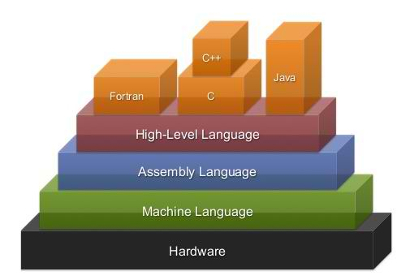

Midterms
Levels of Programming
Languages
source: TheBittTheories
Before you move on to learn those language(s), converting caffeine to code. Its highly advised
that you know the most basic classification of programming languages. Programming languages can
be broadly classified into three categories
Midterms
Programming Paradigm
source: Wikipedia
C++ is a modern and powerful language. It has features that allow functional programming,
procedural programming, object oriented programming and generic programming. By allowing the
developer to choose and mix the programming paradigm that is most adequate for the task C++ is
suitable for anything from small pieces of spontaneous code to large software projects.
New
Importance of Programming Languages
source: epodcastnetwork
Modern human life is greatly influenced by computers. And the computer is run by a computer
program. Computer programs are arranged by programming languages, therefore they are the basis
of all the conveniences that we feel. Programming languages are responsible for all programs
that have been made; rostering systems, virtual reality, scheduling software, online games, Uber
app, anti-virus and so on. Thus mastering programming languages brings one closer to
understanding how all digital technology originates. This article will highlight the importance
of programming languages.
New
Create a simple programs
source:Wikihow
Ever wanted to program in C++? The best way to learn is by looking at examples. Take a look at
the basic C++ programming outline to learn about the structure of a C++ program, then create a
simple program on your own.
New
Create basic program syntax
source: Tutorials
point
When we consider a C++ program, it can be defined as a collection of objects that communicate
via invoking each other's methods. Let us now briefly look into what a class, object, methods,
and instant variables mean.
New
Comparing Datatypes
source Tutorials point
While writing program in any language, you need to use various variables to store various
information. Variables are nothing but reserved memory locations to store values. This means
that when you create a variable you reserve some space in memory.
New
Declaring Variables
source Dummies
The most fundamental of all concepts in C++ is the variable — a variable is like a small box. You
can store things in the box for later use, particularly numbers. The concept of a variable is
borrowed from mathematics. A statement such as
New
if, nested ifs, if-else, if-else-if and
switch statement
source codescracker
The selection (if, if-else, if-else-if, and switch) statements allows to choose the
set-of-instructions for execution depending upon an expression's truth value. C++ provides
following two types of selection statements
New
while loop, do-while loop, for loop, nested
loops
source codescracker
The iteration (for, while, and do-while loop) statements allows a set of instruction to be
performed repeatedly until a certain condition is fulfilled. The iteration statements are also
called loops or looping statements. C++ provides three kinds of loops